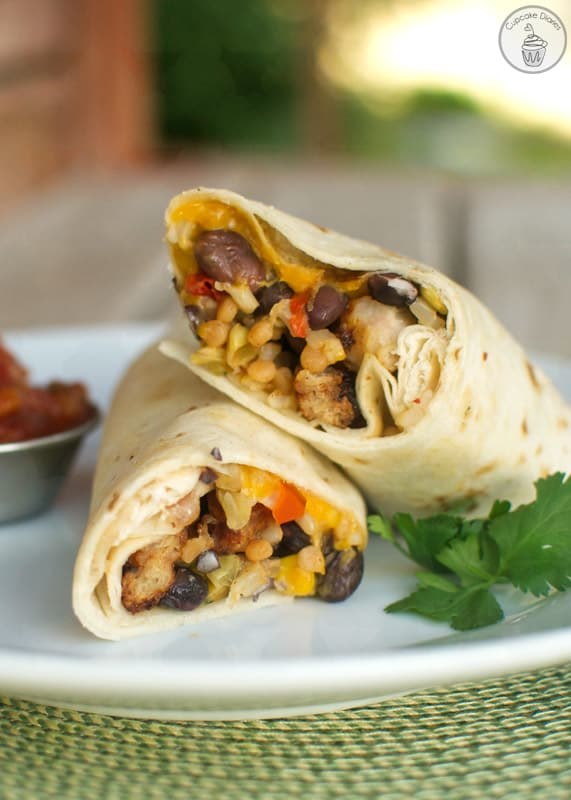
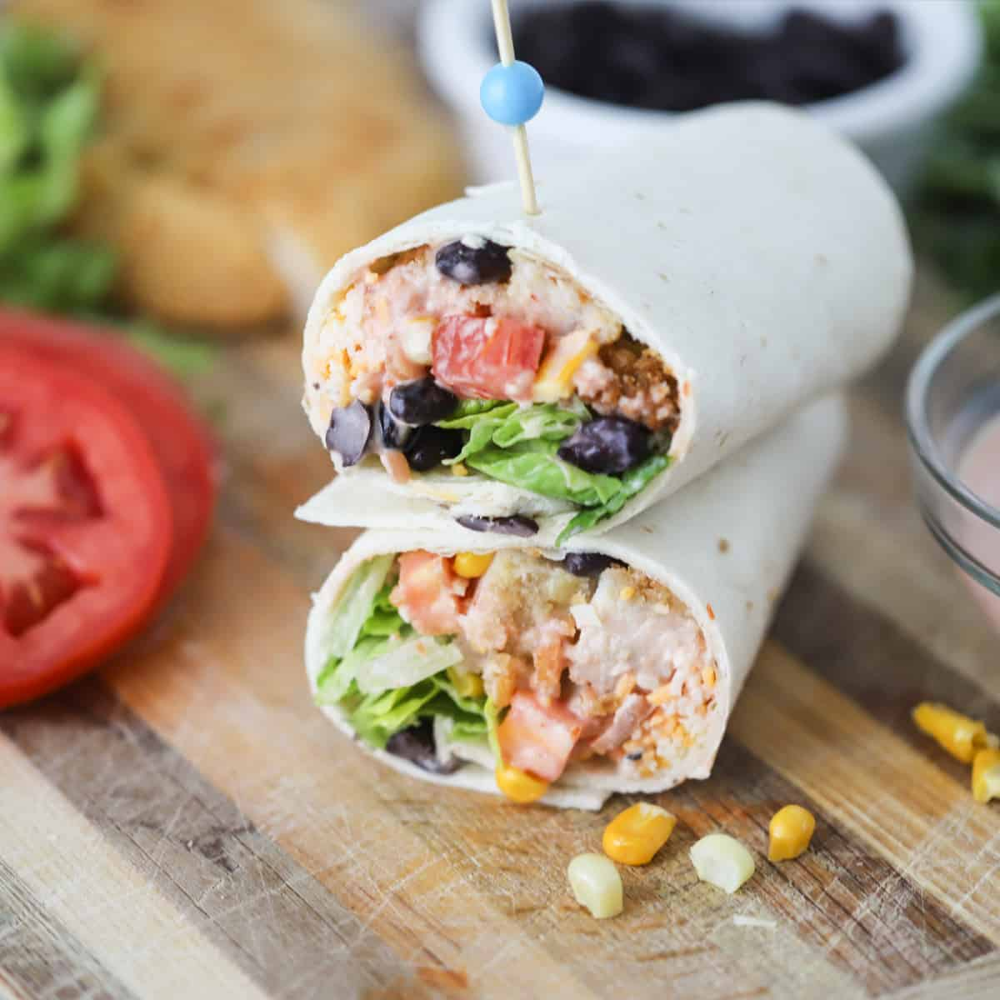

This Southwest chicken wrap is so easy to make that it can be a quick dinner or an on the go lunch. To make this wrap, you start by baking your chicken strips. I always use frozen chicken strips unless I have leftover homemade chicken on hand. While the chicken is cooking, you can mix up your dressing. This is a simple mixture of mayonnaise, milk, salsa, taco seasoning, and cumin. Once that is finished, you can brown your corn in a skillet. After you have done that, all that is left to do is assemble your wrap! Add the chicken, dressing, corn, black beans, lettuce, tomato, and cheese into your tortilla and, voila! You have a tasty wrap ready to eat.

Ingredients
6-7 Crispy Chicken Tenders: To keep this Southwest wrap recipe simple I like to buy the frozen crispy breaded chicken breasts and pop them in the oven. To cut back on calories, you can also use grilled chicken tenders.
6 Flour Tortillas: Use your favorite flour, whole wheat, protein, low carb, or spinach tortillas for these Southwest chicken wraps.
6 Lettuce Leaves: I prefer to use romaine lettuce in this wrap, but you can use whatever you have in the fridge.
2 Tomatoes: Pick a couple medium-large tomatoes and cut into slices. If you don’t like tomatoes, omit them all together.
1 Can Black Beans: Black beans are a good source of fiber, and protein. Drain and rinse black beans before adding them to your wrap.
1 Package Corn: You can use canned or frozen corn that has been thawed.
1 Tablespoon Oil
1 Cup Shredded Cheddar Cheese: I like to keep it simple and use the shredded cheddar cheese that I always have on hand. Other great options are Mexican, Colby Jack, and Monterey Jack cheeses.
1 1/2 Cup Mayonnaise: I like to use lite mayo to cut down on calories and fat.
1/2 Cup Milk: Any kind of milk will work for this homemade dressing. I used 1% milk.
1/2 Cup Salsa: I always have our homemade canned salsa on hand, but any kind of salsa will work in this dressing.
1 Tablespoon Cumin
3 Tablespoons Taco Seasoning: Taco seasoning adds such great flavor to this southwest dressing, I always have our homemade Taco Seasoning on hand. You can make a big batch and keep it in the cupboard.

Steps
Preheat oven according to package directions and bake chicken strips.
In a small mixing bowl add mayonnaise, milk, salsa, taco seasoning, and cumin. Mix well and set aside.
While chicken is baking, place thawed corn into a small skillet with 1 Tbsp. oil and cook until corn is lightly browned.
Remove Chicken from the oven and cut into small strips.
Start assembling your chicken wraps by adding a couple Tbsp. of the southwest dressing to the lower half of the tortilla. Add romaine lettuce, sliced tomatoes, black beans, corn, chicken strips, and drizzle more southwest dressing on top.
Roll up tortilla tightly, cut in half and serve with a side of southwest dressing.